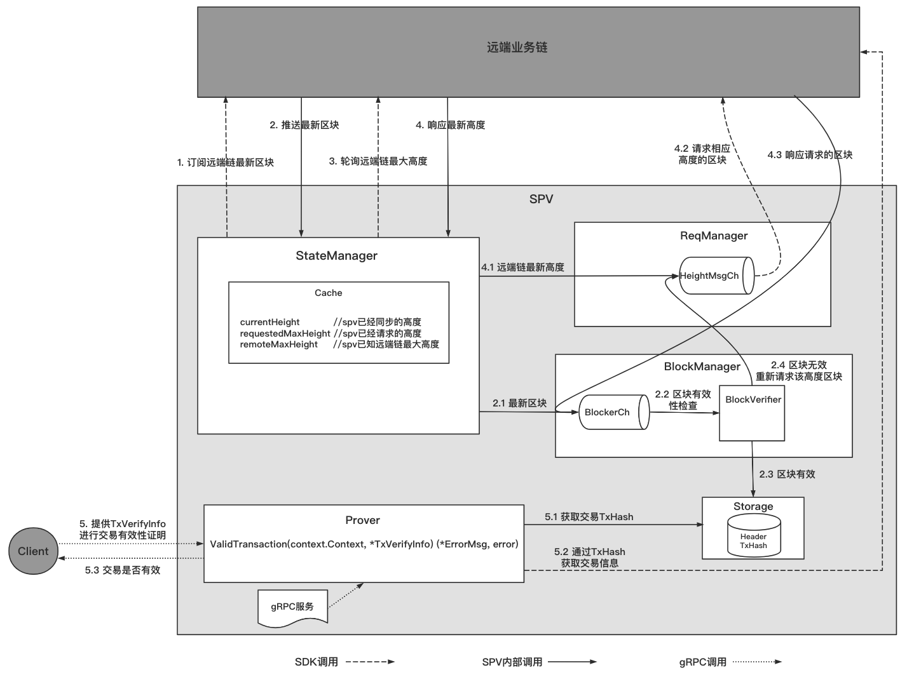

14. SPV 轻节点¶
14.1. 概述¶
SPV是ChainMaker的轻节点，主要是同步区块头及部分其他数据的节点，并通过同步的数据实现交易的验证。
目前只实现了对ChainMaker的支持，具有如下功能：
实现对多链的区块头及部分其他数据（如交易Hash）的同步，且可对外提供交易存在性及有效性证明。
可独立部署获取业务链的数据，并提供交易存在性及有效性证明服务。
可作为组件集成进其他模块，调用启动以获取业务链的数据，并提供交易存在性及有效性证明。
快速部署和使用示例，请按如下链接内容进行：
SPV部署和使用文档
14.2. 节点类型¶
| 节点类型 | 同步数据类型 | 是否参与共识 | 是否验证区块 | 是否执行交易 | 是否可接收执行类交易 | 是否可接收查询类交易 |
|---|---|---|---|---|---|---|
| 共识节点 | 区块 | 是 | 是 | 是 | 是 | 是 |
| 同步节点 | 区块 | 否 | 是 | 是 | 是 | 是 |
| 轻节点 | 区块头 | 否 | 是 | 否 | 否 | 否 |
14.3. 设计思路¶
14.3.1. 模块设计¶
在SPV中，主要包含StateManager、ReqManager、BlockManager、Prover、Storage模块，各模块作用主要如下：
StateManager模块：状态管理模块，主要作用是订阅远端链最新区块、轮询远端链的最新区块高度。
ReqManager模块：请求管理模块，主要作用是请求spv本地已请求的区块高度(requestMaxHeight)至远端链最新高度(remoteHeight)之间的区块、请求BlockManager模块验证不合法的区块。
BlockManager模块：区块管理模块，主要作用是验证区块有效性、并持久化有效区块的区块头和交易Hash。
Prover模块：证明器模块，主要作用是对Client提供交易存在性和有效性证明服务。
Storage模块：存储模块，主要作用是存储同步的区块中的区块头及交易Hash。
14.3.2. 主要流程¶
SPV主要功能为同步区块头及区块中交易Hash，以及提供交易存在性和有效性证明，下图描述了主要功能的流程：

区块同步流程：
StateManager订阅远端业务链最新区块；
StateManager获取远端业务链最新区块；
2.1 BlockManager处理获得的区块；
2.2 BlockManager检验区块的有效性；
2.3 区块有效，存储区块头和区块中的交易Hash；
2.4 区块无效，通过ReqManager重新请求该高度区块；StateManager轮询远端链最新高度；
StateManager获取远端链最新高度；
4.1 ReqManager处理获得的远端链高度信息；
4.2 ReqManager请求相应高度的区块；
4.3 ReqManager获取到相应高度的区块，并交给BlockManager处理；
交易存在性和有效性验证流程:
5. Client提供TxVerifyInfo，调用Prover中的ValidTransaction接口进行交易有效性证明；
5.1 Prover从本地通过交易ID获得交易Hash；
5.2 Prover调用SDK通过交易Hash获得交易实体；
5.3 Prover比对TxVerifyInfo中的交易信息和交易实体中的信息，判断交易存在性和有效性；
14.4. 参数配置¶
14.4.1. SPV配置参数¶
spv_config.yml 配置文件如下：
注意：SPV配置文件中的路径是基于spv二进制文件的相对路径，也可以使用绝对路径。
# 链配置
chain:
# 链ID
- chain_id: "chain1"
# 同步配置，同步链中节点区块最新高度信息的时间间隔，单位：毫秒
sync_chainInfo_interval: 10000
# sdk配置文件路径
sdk_config_path: "../config/chainmaker_sdk_config_chain1.yml"
# 链ID
- chain_id: "chain2"
# 同步配置，同步链中节点区块最新高度信息的时间间隔，单位：毫秒
sync_chainInfo_interval: 10000
# sdk配置文件路径
sdk_config_path: "../config/chainmaker_sdk_config_chain2.yml"
# grpc配置
grpc:
# grpc监听网卡地址
address: 127.0.0.1
# grpc监听端口
port: 12308
# 存储配置，用于配置当前SPV对区块头和交易哈希的存储记录
storage:
# 存储采用的类型,当前仅支持leveldb类型
provider: "leveldb"
# 存储采用leveldb的情况下，对应leveldb的详细配置
leveldb:
# leveldb的存储路径
store_path: "../data/spv_db"
# leveldb的写入Buffer大小，单位：M
write_buffer_size: 4
# leveldb的布隆过滤器的bit长度
bloom_filter_bits: 10
# 日志配置，用于配置日志的打印
log:
system:
# 日志打印级别
log_level: "INFO"
# 日志文件路径
file_path: "../log/spv.log"
# 日志最长保存时间，单位：天
max_age: 365
# 日志滚动时间，单位：小时
rotation_time: 1
# 是否展示日志到终端，仅限于调试使用
log_in_console: false
# 是否打印颜色日志
show_color: true
14.4.2. ChainMaker SDK配置文件¶
chainmaker_sdk_config_chain1.yml 配置文件如下：
注意：SDK配置文件中的路径是基于spv二进制文件的相对路径。
chain_client:
# 链ID
chain_id: "chain1"
# 组织ID
org_id: "wx-org1.chainmaker.org"
# 客户端用户私钥路径
user_key_file_path: "../config/crypto-config/wx-org1.chainmaker.org/user/client1/client1.tls.key"
# 客户端用户证书路径
user_crt_file_path: "../config/crypto-config/wx-org1.chainmaker.org/user/client1/client1.tls.crt"
# 客户端用户交易签名私钥路径(若未设置，将使用user_key_file_path)
user_sign_key_file_path: "../config/crypto-config/wx-org1.chainmaker.org/user/client1/client1.sign.key"
# 客户端用户交易签名证书路径(若未设置，将使用user_crt_file_path)
user_sign_crt_file_path: "../config/crypto-config/wx-org1.chainmaker.org/user/client1/client1.sign.crt"
nodes:
- # 节点地址，格式为：IP:端口:连接数
node_addr: "127.0.0.1:12301"
# 节点连接数
conn_cnt: 10
# RPC连接是否启用双向TLS认证
enable_tls: true
# 信任证书池路径
trust_root_paths:
- "../config/crypto-config/wx-org1.chainmaker.org/ca"
- "../config/crypto-config/wx-org2.chainmaker.org/ca"
# TLS hostname
tls_host_name: "chainmaker.org"
- # 节点地址，格式为：IP:端口:连接数
node_addr: "127.0.0.1:12302"
# 节点连接数
conn_cnt: 10
# RPC连接是否启用双向TLS认证
enable_tls: true
# 信任证书池路径
trust_root_paths:
- "../config/crypto-config/wx-org1.chainmaker.org/ca"
- "../config/crypto-config/wx-org2.chainmaker.org/ca"
# TLS hostname
tls_host_name: "chainmaker.org"
14.5. 接口说明¶
14.5.1. gRPC接口¶
独立部署时，提供交易存在性和有效性证明服务的grpc接口
type RpcProverServer interface {
ValidTransaction(context.Context, *TxVerifyInfo) (*ErrorMsg, error)
}
其中*api.TxVerifyInfo结构如下：
type TxVerifyInfo struct {
ChainId string // 链ID
BlockHeight int64 // 交易所在区块高度
Index int32 // 交易索引, ChainMaker不存在该字段
TxKey string // 交易ID
ContractValidData *ContractValidData // 交易调用的合约数据
Extra []byte // 预留扩展字段
}
type ContractValidData struct {
ContractName string // 合约名称
Version string // 合约版本
Method string // 合约方法名
Parameters []*KeyValuePair // 合约方法参数
Extra []byte // 预留扩展字段
}
type KeyValuePair struct {
Key string // 参数名称
Value string // 参数值
}
其中*api.Response结构如下：
type Response struct {
ChainId string // 链ID
TxKey string // 交易ID
Code StatusCode // 状态码，0 表示VALID，有效的交易； 1 表示INVALID，无效的交易
Message string // 提示信息
}
14.5.2. 内部接口¶
SPV为了适配更多的链，在实现时进行了接口抽象。因此，在适配不同链时需要对内部接口进行针对性实现。
包装类型接口
// 包装区块的接口
type Blocker interface {
// 区块头接口
Header
// 返回区块头
GetBlockHeader() Header
}
type Header interface {
// 返回该区块所在链的链ID
GetChainId() string
// 返回该区块的前置区块哈希值
GetPreHash() []byte
// 返回该区块中的交易默克尔树根哈希
GetTxRoot() []byte
// 返回该区块的高度值
GetHeight() int64
// 返回该区块的哈希值
GetBlockHash() []byte
}
// 包装交易的接口
type Transactioner interface {
// 返回交易状态码
GetStatusCode() int32
// 返回交易哈希值
GetTransactionHash() ([]byte, error)
// 返回该交易所调用合约的名称
GetContractName() (string, error)
// 返回该交易所调用合约的方法名
GetMethod() (string, error)
// 返回该交易所调用合约方法的参数
GetParameters() ([]interface{}, error)
}
SDK适配器接口
type SDKAdapter interface {
// 订阅最新区块
SubscribeBlock() (chan common.Blocker, error)
// 查询远端链当前高度
GetChainInfo() (int64, error)
// 通过高度获取区块
GetBlockByHeight(blockHeight int64) (common.Blocker, error)
// 通过交易ID获取交易
GetTransactionByKey(txKey string) (common.Transactioner, error)
// 获取远端链配置信息
GetChainConfig() (*protogo.ChainConfig, error)
// 停止sdk的链接并释放链接资源
Stop() error
}
编解码接口
type Coder interface {
// 将区块头序列化
SerializeBlockHeader(header common.Header) ([]byte, error)
// 反序列化区块头
DeserializeBlockHeader(serializeBlockHeader []byte) (common.Header, error)
// 根据区块中的交易生成交易哈希
GenerateTransactionHashes(blocker common.Blocker) (map[string][]byte, error)
}
验证器接口
type Verifier interface {
// 验证同步过来的区块的有效性
ValidBlock(blocker common.Blocker, preBlockHash []byte) error
}
证明器接口
type Prover interface {
// 验证交易存在性和有效性
ValidTransaction(txInfo *api.TxVerifyInfo, timeout time.Duration) error
}